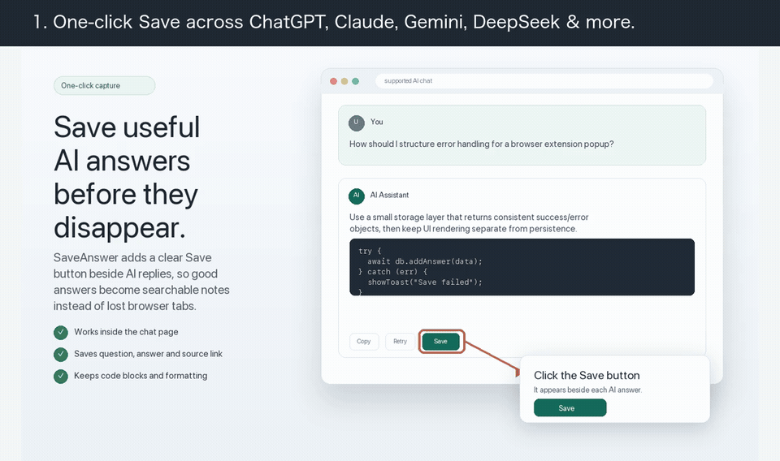
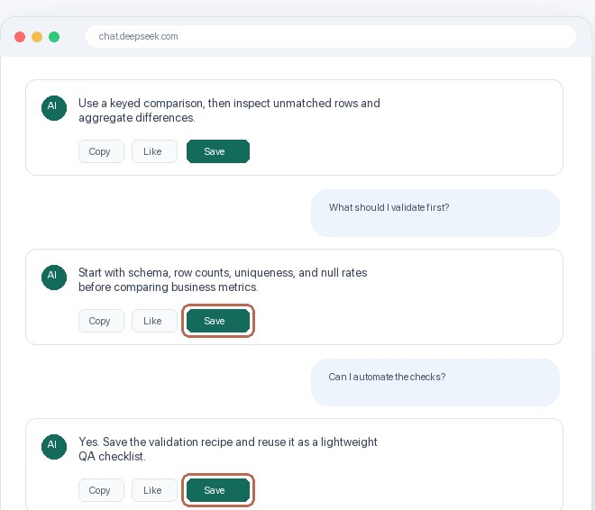
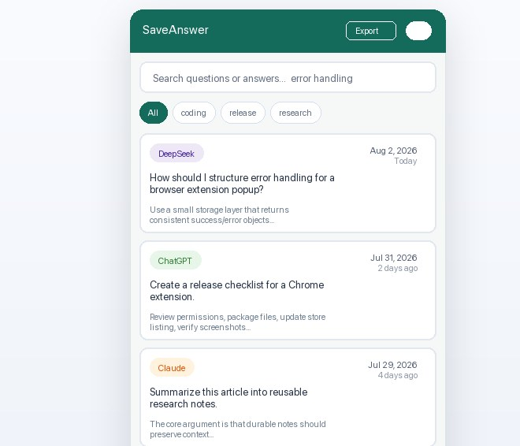
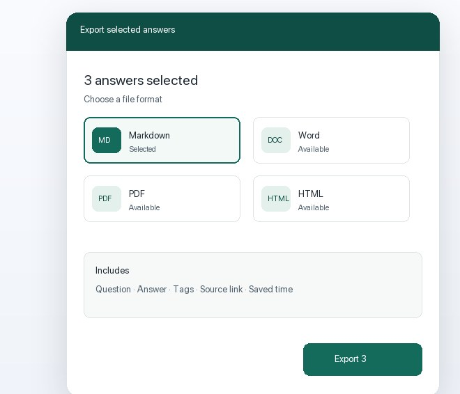
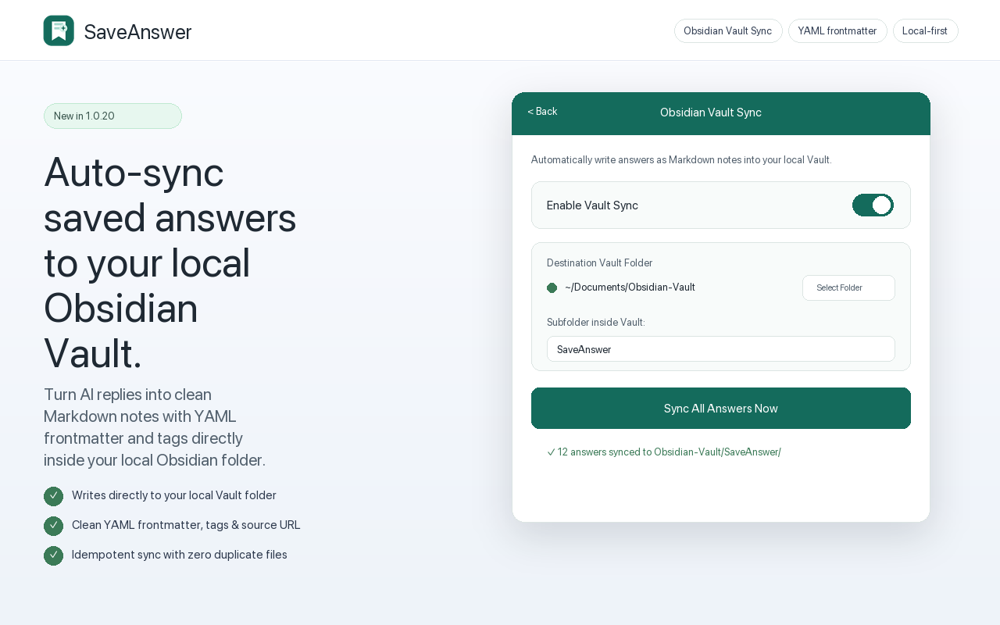
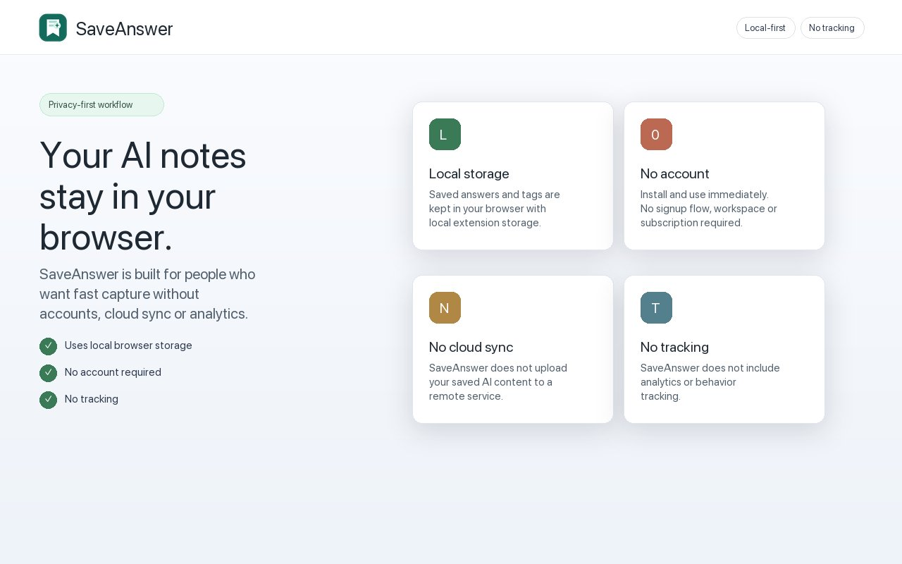

AI 的好回答，
存下来，随时搜到。
Save the AI answers
you'll reuse.
同时用 ChatGPT、Claude、DeepSeek 等大模型？好回答散落在各个聊天记录里，过几天就翻不到了。SaveAnswer 在每条回答旁加一个「保存」按钮，存进一个能全文搜索的本地库，需要时一搜就有，还能直接同步至 Obsidian 或导出成 Word / PDF / Markdown。 Good answers get buried across multiple AI chat histories. SaveAnswer adds a native Save button beside each reply, keeps only the ones you choose in a searchable local library, syncs directly to Obsidian, and exports to Markdown, Word, or PDF.
检测到你在用国产浏览器：如果打不开 Chrome 商店，请看下方「其他安装方式」。 If the Chrome Web Store doesn't open in your browser, see "Other ways to install" below.
SaveAnswer 目前只支持 Chrome、Edge 等 Chromium 内核浏览器。 SaveAnswer currently works in Chrome, Edge and other Chromium browsers.
SaveAnswer 目前只支持 Chrome、Edge 等 Chromium 内核浏览器。 SaveAnswer currently works in Chrome, Edge and other Chromium browsers.
这是电脑浏览器扩展，请在电脑上打开本页安装。 This is a desktop browser extension. Open this page on your computer to install.
已原生支持 7 大平台：Works natively on 7 platforms: ChatGPT · Claude · Gemini · DeepSeek · 通义千问Qwen · Grok · 豆包Doubao

三步：保存、找回、带走Save it. Find it. Take it with you.
不是把所有聊天都备份一遍，只留下你以后真的会再用的那几条。 Not another archive of every chat — just the few replies you'll actually come back to.

看到好回答，点「保存」Click Save on a good answer
按钮原生嵌入每条 AI 回答底部的操作栏中，统一 32px 紧凑设计，自适应浅色与深色模式。保存时即刻打标签，在流式生成或 DeepSeek 长对话中也绝不发生漂移与错位。The 32px Save button attaches directly to each reply's native action bar with dark mode support. Add tags on the fly. Stays locked to the correct answer without shifting, even in long DeepSeek chats.

几天后，一搜就有Search it days later
毫秒级全文检索，同时搜索问题、回答正文及代码片段；支持按标签与 AI 来源一键筛选。所有平台的碎片回答归于一处，随时点击来源链接一秒跳回原对话上下文。Instant full-text search across questions, answers, and code blocks. Filter by custom tags or AI source. Jump back to the original conversation context anytime with one click.

导出、同步或分享Export, sync or share
选中的回答可导出为 Markdown、Word (.docx)、PDF 或 HTML，支持自选目录；可自动同步至本地 Obsidian 双链知识库；还可通过离线 Canvas 2D 生成 4 套高颜值主题的分享卡片。Export selected answers to Markdown, Word, PDF, or HTML. Sync directly with your local Obsidian vault as atomic notes, or generate beautiful PNG cards across 4 curated themes offline.
原生支持主流大模型平台 Natively Built for Leading AI Chat Platforms
跨模型统一知识库：无论你在哪个大模型找到了好答案，SaveAnswer 都能原生挂载并汇聚成统一的个人知识库。 Stop losing great insights across scattered tabs. SaveAnswer attaches natively to your daily AI chat assistants and brings them together into one unified library.
ChatGPT
chatgpt.com深度适配 OpenAI 最新 DOM 布局与流式渲染，原生挂载到回答操作栏中，完整捕获代码块、列表与思考过程。 Tailored for OpenAI's latest layout and streaming answers. Seamlessly mounted inside the response action bar to preserve code blocks, tables, and reasoning.
Claude
claude.ai完美支持 Anthropic Claude 的超长上下文对话、深度推导与编程代码输出，一键沉淀完整分析思路。 Captures Anthropic Claude's in-depth analytical reasoning, coding artifacts, and long-turn dialogues with rich formatting intact.
DeepSeek
chat.deepseek.com针对 DeepSeek 深度思考模型专门调优，彻底解决长对话流式渲染下按钮错位问题，精准提取正式回答与思维链。 Specially optimized for DeepSeek reasoning models. Fixes button shifting in long chats and cleanly extracts answers alongside chain-of-thought steps.
Google Gemini
gemini.google.com适配 Google Gemini 网页端界面，支持多模态分析问答、复杂 Markdown 表格与行内搜索引用链接的完整保存。 Supports Gemini's web interface, cleanly capturing complex data tables, markdown formatting, and inline source citation links.
Grok (xAI)
grok.com / x.com完美兼容 xAI Grok 的动态响应式前端框架，确保在快速多轮问答下按钮稳定挂载、问答对精确关联。 Seamless compatibility with xAI Grok's dynamic reactive UI, guaranteeing rock-solid button binding and question-answer pairing.
豆包 (Doubao)
doubao.com原生适配豆包网页端对话结构，支持高频日常对话、灵感总结与工作学习问答的一键秒存。 Native integration for Doubao web chats, allowing one-click capture of daily research, writing drafts, and learning notes.
通义千问 (Qwen)
tongyi.aliyun.com深度支持通义千问网页端，无论是编程辅助、文档问答还是专业报告分析，都能原样保留排版与结构。 Full support for Qwen web chats, capturing code blocks, document summaries, and technical explanations with original hierarchy.
更多模型持续接入 More AI Platforms Coming
有常用的大模型网页端未在列表中？欢迎通过 反馈页面 告诉我们，高频需求平台将以最快速度完成适配。 Using another AI chat tool regularly? Let us know on the feedback page and requested platforms will be prioritized.
一键同步到本地 Obsidian 知识库 Direct Obsidian Vault Sync: AI Answers as Atomic Notes
基于现代浏览器 File System Access API 原生直写本地磁盘，无需部署后端服务或配置云端 Key。保存 AI 回答的同时，自动在你的 Obsidian 仓库生成结构化 Markdown 卡片。 Powered by the browser's native File System Access API to write directly to your local disk. Zero cloud servers or API keys needed — every save creates an atomic, structured Markdown card in your Obsidian vault.
-
标准 YAML FrontmatterStandard YAML Frontmatter:
自动注入
title、source、url、date和自定义tags，完美兼容 Obsidian Dataview 插件、全文检索与双链图谱。 Auto-generates clean metadata (title,source,url,date,tags) for seamless use with Obsidian Dataview, graph view, and backlinks. -
规范原子化命名 (Atomic Notes)Atomic Note Filenames:
按
YYYY-MM-DD_平台_问题.md自动安全命名，每条问答独立成卡，方便使用[[双向链接]]进行网状知识串联。 Structured asYYYY-MM-DD_Platform_Question.md, turning every answer into an atomic note ideal for[[bidirectional links]]. -
自定义 Vault 目录与全量同步Custom Vault & Instant Batch Sync:
自由选取电脑中的 Obsidian 仓库（可指定子目录如
SaveAnswer），支持“一键同步全库”，具备幂等写入保护，不产生重复脏文件。 Choose your vault and optional subfolder (e.g.SaveAnswer). Supports "Sync All Answers Now" with idempotent deduplication to keep files clean. - 100% 离线与隐私安全100% Local-First & Private: 浏览器直接向你授权的本地文件夹写入文件，纯离线执行，任何笔记内容均不上云，完全归你所有。 Direct local file handle access inside the browser sandbox. Zero network telemetry, zero cloud storage — your knowledge stays strictly on your device.
# Generated atomic markdown card for Obsidian: --- title: "React 19 vs React 18: Key Differences" source: "Claude" url: "https://claude.ai/chat/..." date: "2026-10-30 10:15:00" tags: - "ai-answer" - "react" - "frontend" --- > **Source**: Claude | **Saved**: 2026-10-30 | [View original conversation](...)

你的内容只在你的浏览器里Your answers stay in your browser
- 保存的内容存在
chrome.storage.local，不上传任何服务器Saved items live inchrome.storage.localand are never uploaded - 不需要注册账号，没有统计和追踪代码No account, no analytics or tracking code
- 只保存你主动点过「保存」的那一条回答Only the replies you explicitly click Save on are stored
需要说清楚的边界：不会自动备份全部聊天，不能恢复已经消失的对话，也没有跨设备同步。如果你要的是全量自动归档，其他工具可能更合适。 To be clear: it doesn't auto-archive every chat, can't recover conversations you didn't save, and has no cross-device sync. If you need a full automatic archive, another tool may fit better.

安装方式Ways to install
Chrome 商店能正常打开就直接装；打不开的往下看。 If the Chrome Web Store opens for you, install directly. If not, see below.
打不开 Chrome 商店？我们正在准备 Edge 加载项商店的上架材料——国内可以直接访问，而且 Windows 自带 Edge。上架后这里会第一时间更新。想在能装的时候收到通知，可以在 反馈页 留个邮箱。360、QQ 浏览器和国内扩展站的收录也在计划中。 Can't open the Chrome Web Store? We're preparing the Edge Add-ons listing, which is reachable in mainland China. This page will be updated as soon as it's available. Leave an email on the feedback page if you'd like to be told when it's installable.
FAQ
使用 Obsidian 同步需要安装额外插件或云端账号吗？Do I need an Obsidian plugin or cloud account for Vault Sync?
完全不需要。SaveAnswer 基于现代 Chromium 浏览器的原生 File System Access API 直接向你选中的本地 Obsidian 文件夹写入标准 Markdown 文件，零网络上传，没有第三方插件依赖，离线也能秒级同步。No. SaveAnswer uses the native File System Access API in Chromium browsers to write standard Markdown notes directly into your chosen local folder or Obsidian vault. Zero network requests, no plugin dependencies, and fully functional offline.
除了 ChatGPT 和 DeepSeek，还支持哪些大模型？Which AI platforms are supported?
目前已深度原生支持 7 大主流 AI 平台：ChatGPT、Claude、Google Gemini、DeepSeek、Grok、豆包 (Doubao) 与通义千问 (Qwen)。随着各平台界面更新，我们会持续维护选择器，并在社区反馈中优先适配高频提议的新模型。We natively support 7 major AI platforms: ChatGPT, Claude, Google Gemini, DeepSeek, Grok, Doubao, and Qwen. We continuously maintain selector compatibility as platforms evolve and prioritize adding new models based on user feedback.
和直接用 ChatGPT 自带的聊天记录搜索有什么区别？How is this different from ChatGPT's own history search?
聊天记录搜索只能搜标题或单个平台，而且好回答混在大量闲聊里。SaveAnswer 只收你挑出来的回答，跨 ChatGPT、Claude、DeepSeek 等平台放在同一个库里，按问题和回答全文搜索。Built-in history covers one platform and mixes good answers with everything else. SaveAnswer keeps only the replies you pick, across ChatGPT, Claude, DeepSeek and more, in one full-text-searchable library.
换电脑或重装浏览器，数据还在吗？What happens if I switch computers?
数据只存在当前浏览器里，没有云同步。需要迁移或备份时，可以先导出 Markdown / Word / PDF。Data lives only in the current browser; there is no sync. Export to Markdown, Word or PDF to back up or move it.
收费吗？Is it free?
免费，没有账号体系，也没有付费功能。Yes. No account and no paid tier.
我用的 AI 不在支持列表里怎么办？My AI chat isn't supported. Can you add it?
欢迎在 反馈页 告诉我们，提的人多的平台会优先适配。Tell us on the feedback page. The most requested platforms get added first.